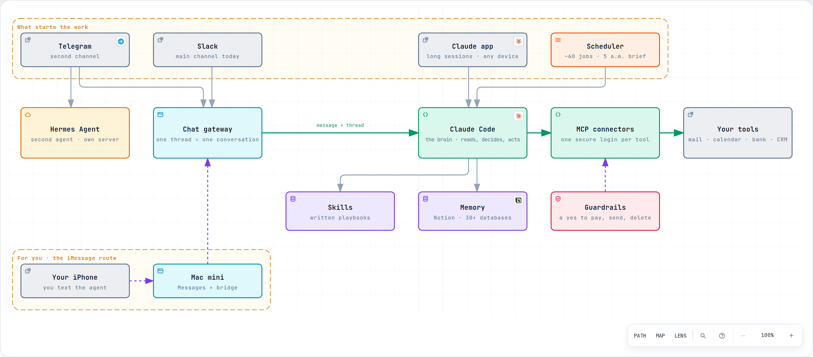

Morning brief
Calendar, deals that need a move, overdue tasks, emails waiting for a reply. One message before the day starts.
 Briefing note · October 2026
Briefing note · October 2026
One always-on server, one AI brain, every tool plugged in, and a chat window as the front door. This note shows the setup we run every day at Rama Logic, then sketches the same thing for a founder who wants to drive it from iMessage.
server, always on. Ours is a rented Linux machine; a Mac mini at home works the same way.
tools connected: email, calendar, notes, files, bank, payments, CRM, meeting recorder.
scheduled jobs that run while we sleep and report back in the morning.
Think of it as a chief of staff that lives on a server. You write to it the way you would write to an assistant: “What’s on my plate today?”, “Draft a reply to Anna”, “How much did we invoice in September?”. It reads and writes in your tools, follows written procedures, and answers in the same thread.
You send a message, it does the work and replies. From your phone, your laptop, anywhere.
Jobs run at set times: a 5 a.m. brief, inbox triage three times a day, a Monday finance update.
A signed contract or a newly booked call triggers the right follow-up in the CRM.
No hidden actions. Every action lands in Notion or in a log, and by default anything that moves money, sends a message to someone else or deletes data waits for a human yes. We made one deliberate exception: short LinkedIn follow-up reminders, two at most per person, only when there was no reply.

Interactive map. Pick a chapter above the map to follow one path, or open it on its own page.
Open the full mapAn open-source agent gateway (by Nous Research, the same family of tool as OpenClaw), running on its own small server with a different, cheaper model (DeepSeek, an open-weights model we call through its API). We use it as a second assistant on Telegram and to test the open-source route. It connects to 15+ chat apps out of the box, iMessage included.
A rented Linux machine (Ubuntu, 4 cores, 16 GB of memory), always on. Ours sits in a data centre rather than under a desk; the design is identical on a Mac mini at home.
Claude Code runs on the server. Interactively when we work with it, on its own when a scheduled job calls it. Long sessions survive a closed laptop and can be picked up from the phone.
Each tool is plugged in through MCP (Model Context Protocol), the open standard for giving an AI agent access to an app, each with its own login. Adding a tool means adding a connector, not rebuilding the system.
Recurring work is written down once as a skill: a plain-text procedure. The agent follows it the same way every time, and when a result is off we fix the text, not the code.
Standard scheduled jobs launch the agent at fixed times, with spending caps. Results go to the chat and into Notion.
A small chat bot passes messages to the agent and streams the answer back. One thread is one conversation, so topics don’t get mixed up.
API keys stay in configuration files on the server, never in the conversation. Sending, paying and deleting need a human tick by default; the only exception is short LinkedIn follow-up reminders, under strict limits. The configuration is backed up every week to a private Git repository, so the server can be rebuilt from scratch.
Calendar, deals that need a move, overdue tasks, emails waiting for a reply. One message before the day starts.
Sorts the inbox, archives the noise, drafts the replies that matter. Drafts only: we press send.
Every new call recording becomes a summary, decisions and follow-up tasks in Notion, linked to the right client.
Reviews the contacts that need a nudge and writes the message. We tick “send”, then it sends. Only short LinkedIn reminders go out on their own, two at most per person.
Monday: bank transactions sorted, cash and pipeline updated. Friday: a draft status email per client, for review.
“What did we promise this client last week?” “Prepare the October invoice draft.” “Find 30 minutes with Paul next week.”
Same architecture, adapted to running personal and business matters from iMessage, on a system you control.
The one hard constraint: iMessage only runs on Apple hardware and has no official API. The agent therefore needs a Mac signed in to Messages, with a bridge passing messages to and from the agent: BlueBubbles (open source) for Hermes Agent, its own imsg bridge for OpenClaw. Both work today.
Pick Option A if privacy is the driver, Option B if reliability is. Either way, start from 5 to 10 concrete things you want to do from iMessage, connect the tools those need, and grow from there.
Tell Hannes. We'll use the call to list what you want to run from iMessage and which tools matter most, then come back with a proposal: setup, timeline and budget.